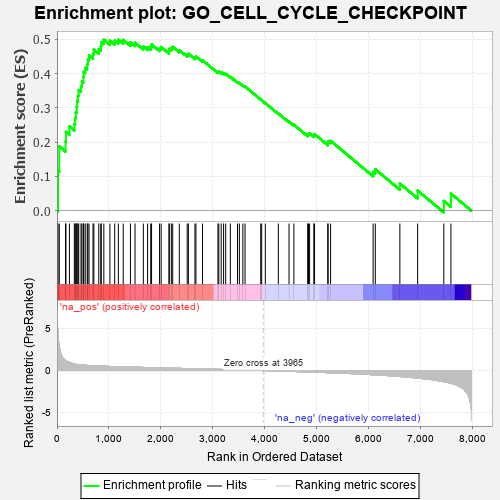
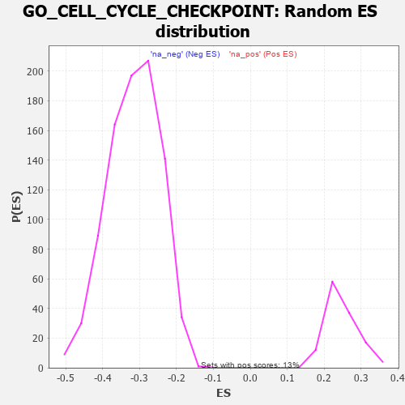

| | | Dataset | 7d |
| Phenotype | NoPhenotypeAvailable |
| Upregulated in class | na_pos |
| GeneSet | GO_CELL_CYCLE_CHECKPOINT |
| Enrichment Score (ES) | 0.49940023 |
| Normalized Enrichment Score (NES) | 2.0230126 |
| Nominal p-value | 0.0 |
| FDR q-value | 0.09890139 |
| FWER p-Value | 0.199 |
Table: GSEA Results Summary

Fig 1: Enrichment plot: GO_CELL_CYCLE_CHECKPOINT
Profile of the Running ES Score & Positions of GeneSet Members on the Rank Ordered List
| PROBE | GENE SYMBOL | GENE_TITLE | RANK IN GENE LIST | RANK METRIC SCORE | RUNNING ES | CORE ENRICHMENT | | 1 | H2AX | | | 20 | 4.738 | 0.1175 | Yes |
| 2 | PCBP4 | | | 44 | 2.875 | 0.1874 | Yes |
| 3 | TEX14 | | | 164 | 1.179 | 0.2021 | Yes |
| 4 | BUB3 | | | 172 | 1.143 | 0.2302 | Yes |
| 5 | CDC45 | | | 239 | 0.950 | 0.2459 | Yes |
| 6 | WEE2 | | | 333 | 0.766 | 0.2535 | Yes |
| 7 | CNOT7 | | | 348 | 0.750 | 0.2707 | Yes |
| 8 | HUS1 | | | 362 | 0.735 | 0.2877 | Yes |
| 9 | CLSPN | | | 379 | 0.719 | 0.3039 | Yes |
| 10 | BAX | | | 387 | 0.711 | 0.3210 | Yes |
| 11 | NBN | | | 405 | 0.696 | 0.3365 | Yes |
| 12 | RAD9A | | | 418 | 0.681 | 0.3522 | Yes |
| 13 | CNOT6 | | | 462 | 0.655 | 0.3633 | Yes |
| 14 | CDC20 | | | 480 | 0.644 | 0.3775 | Yes |
| 15 | THOC1 | | | 507 | 0.627 | 0.3901 | Yes |
| 16 | CNOT2 | | | 514 | 0.625 | 0.4051 | Yes |
| 17 | PRCC | | | 543 | 0.614 | 0.4171 | Yes |
| 18 | CCNB1 | | | 581 | 0.601 | 0.4277 | Yes |
| 19 | RBL2 | | | 593 | 0.596 | 0.4414 | Yes |
| 20 | NDC80 | | | 616 | 0.590 | 0.4536 | Yes |
| 21 | MRE11 | | | 693 | 0.560 | 0.4581 | Yes |
| 22 | CDC6 | | | 709 | 0.557 | 0.4703 | Yes |
| 23 | BLM | | | 804 | 0.531 | 0.4719 | Yes |
| 24 | RFWD3 | | | 843 | 0.521 | 0.4803 | Yes |
| 25 | RPA2 | | | 851 | 0.519 | 0.4925 | Yes |
| 26 | NSUN2 | | | 901 | 0.506 | 0.4991 | Yes |
| 27 | PSMG2 | | | 1018 | 0.480 | 0.4966 | Yes |
| 28 | RINT1 | | | 1110 | 0.462 | 0.4968 | Yes |
| 29 | TFDP1 | | | 1180 | 0.450 | 0.4994 | Yes |
| 30 | CNOT3 | | | 1274 | 0.435 | 0.4986 | No |
| 31 | CARM1 | | | 1413 | 0.408 | 0.4915 | No |
| 32 | E2F4 | | | 1501 | 0.390 | 0.4903 | No |
| 33 | ORC1 | | | 1661 | 0.363 | 0.4794 | No |
| 34 | MRNIP | | | 1743 | 0.346 | 0.4779 | No |
| 35 | RAD17 | | | 1804 | 0.336 | 0.4788 | No |
| 36 | MSH2 | | | 1819 | 0.334 | 0.4855 | No |
| 37 | ZW10 | | | 1973 | 0.309 | 0.4739 | No |
| 38 | FOXO4 | | | 2004 | 0.304 | 0.4778 | No |
| 39 | DTL | | | 2154 | 0.284 | 0.4662 | No |
| 40 | CNOT4 | | | 2161 | 0.283 | 0.4726 | No |
| 41 | TIPRL | | | 2200 | 0.277 | 0.4748 | No |
| 42 | CDK2 | | | 2226 | 0.272 | 0.4785 | No |
| 43 | CDC5L | | | 2353 | 0.253 | 0.4689 | No |
| 44 | CDT1 | | | 2505 | 0.226 | 0.4555 | No |
| 45 | RAD1 | | | 2528 | 0.223 | 0.4584 | No |
| 46 | VPS4A | | | 2654 | 0.205 | 0.4477 | No |
| 47 | MUS81 | | | 2673 | 0.202 | 0.4505 | No |
| 48 | ATR | | | 2800 | 0.183 | 0.4392 | No |
| 49 | CUL4A | | | 3097 | 0.137 | 0.4052 | No |
| 50 | MDC1 | | | 3113 | 0.135 | 0.4067 | No |
| 51 | FOXN3 | | | 3159 | 0.129 | 0.4043 | No |
| 52 | FZR1 | | | 3205 | 0.122 | 0.4017 | No |
| 53 | EME1 | | | 3246 | 0.114 | 0.3995 | No |
| 54 | CHFR | | | 3335 | 0.099 | 0.3908 | No |
| 55 | CNOT1 | | | 3473 | 0.081 | 0.3755 | No |
| 56 | XPC | | | 3509 | 0.076 | 0.3730 | No |
| 57 | LCMT1 | | | 3576 | 0.063 | 0.3663 | No |
| 58 | WAC | | | 3618 | 0.056 | 0.3625 | No |
| 59 | HINFP | | | 3920 | 0.006 | 0.3245 | No |
| 60 | TOP2B | | | 3938 | 0.005 | 0.3225 | No |
| 61 | SYF2 | | | 4008 | -0.009 | 0.3140 | No |
| 62 | PCID2 | | | 4258 | -0.051 | 0.2837 | No |
| 63 | ERCC6 | | | 4464 | -0.087 | 0.2600 | No |
| 64 | APC | | | 4558 | -0.107 | 0.2509 | No |
| 65 | TAOK3 | | | 4823 | -0.162 | 0.2216 | No |
| 66 | TIPIN | | | 4839 | -0.166 | 0.2239 | No |
| 67 | DLG1 | | | 4860 | -0.169 | 0.2256 | No |
| 68 | EP300 | | | 4941 | -0.186 | 0.2202 | No |
| 69 | PRKDC | | | 4955 | -0.189 | 0.2234 | No |
| 70 | ATM | | | 5210 | -0.249 | 0.1975 | No |
| 71 | TOP2A | | | 5216 | -0.250 | 0.2032 | No |
| 72 | CDK1 | | | 5264 | -0.262 | 0.2039 | No |
| 73 | PLK1 | | | 6082 | -0.500 | 0.1130 | No |
| 74 | STK33 | | | 6124 | -0.512 | 0.1208 | No |
| 75 | TPR | | | 6597 | -0.709 | 0.0790 | No |
| 76 | DOT1L | | | 6939 | -0.897 | 0.0585 | No |
| 77 | CASP2 | | | 7442 | -1.322 | 0.0284 | No |
| 78 | NEK11 | | | 7579 | -1.521 | 0.0497 | No |
Table: GSEA details [plain text format]

Fig 2: GO_CELL_CYCLE_CHECKPOINT: Random ES distribution
Gene set null distribution of ES for GO_CELL_CYCLE_CHECKPOINT